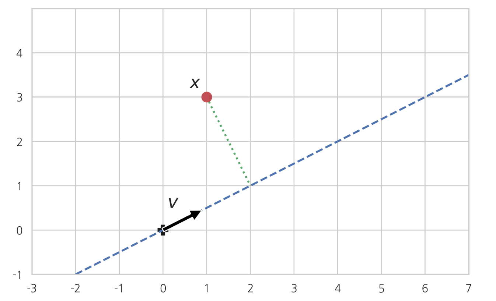

선형대수와 해석기하의 기초
Summary
- 벡터의 길이는 놈으로 정의한다.
- 길이가 1인 벡터를 단위벡터라고 한다.
- 유클리드거리는 두벡터가 가리키는 점 사이의 거리이다. 벡터의 차로 길이를 구할 수 있다.
- 의 값은 가 0도에 가까워질수록 1에 가까워지고 가 90도에 가까워질수록 0에 가까워진다.
- 두 벡터 a와 b가 이루는 각이 90도이면 서로 직교(orthogonal)라고 하며 𝑎⊥𝑏로 표시한다. 단위벡터가 서로 직교하면 정규직교라고 한다.
- 두 벡터의 방향이 비슷할 수록 벡터가 비슷하다고 간주하여 두 벡터 사이의 각의 코사인 값을 코사인 유사도(cosine similarity)라고 한다. 코사인 값이 1일때 코사인 유사도가 제일 크다
- 벡터 a를 다른 벡터 b에 직교하는 성분을 벡터 b에 대한 직교성분(rejection, )과 벡터 b에 평행한 성분을 벡터 b에 대한 투영성분(projection, )이라고 한다.
벡터의 기하학적 의미
N차원 벡터(vector) a는 N차원의 공간상에서 벡터 a의 값으로 표시되는 점(point) 또는 원점과 벡터 a의 값으로 표시되는 점을 연결한 화살표(arrow) 이다.
예를 들어 2차원 벡터 는 2차원 상의 공간에서 𝑥 좌표가 , 𝑦 좌표가 인 점으로 생각할 수도 있고 또는 원점에서 이 점을 가리키는 화살표로 생각할 수도 있다. 벡터를 화살표로 생각하는 경우에는 길이와 방향을 고정시킨채 평행이동할 수 있다.
벡터의 길이
벡터 a의 길이는 놈(norm) 으로 정의한다
- numpy의 linalg 서브 패키지의
norm명령으로 벡터의 길이를 계산할 수 있다. 위에서 예로 든 2차원 벡터 의 길이는 이다.
a = np.array([1, 2])
np.linalg.norm(a)
스칼라와 벡터의 곱
양의 실수와 벡터를 곱하면 벡터의 방향은 변하지 않고 실수의 크기만큼 벡터의 길이가 커진다. 만약 음의 실수를 곱하면 벡터의 방향이 반대가 된다.

단위 벡터
길이가 1인 벡터를 단위 벡터(unit vector) 라고 한다. 예를 들어 다음과 같은 벡터들은 모두 단위 벡터이다.
영벡터가 아닌 임의의 벡터 x에 대해 다음 벡터는 x와 같은 방향을 가리키는 단위 벡터가 된다.
a = np.array([1, 0])
b = np.array([0, 1])
c = np.array([1/np.sqrt(2), 1/np.sqrt(2)])
np.linalg.norm(a), np.linalg.norm(b), np.linalg.norm(c)
벡터의 합
벡터와 벡터의 합도 벡터가 된다. 이 때 두 벡터의 합은 그 두 벡터를 이웃하는 변으로 가지는 평행사변형의 대각선 벡터가 된다.
벡터의 선형조합
여러개의 벡터를 스칼라곱을 한 후 더하면 선형조합(linear combination)이 된다.
이 식에서 은 스칼라 계수이다.

벡터의 차
벡터의 차 a - b = c 는 벡터 b가 가리키는 점으로부터 벡터 a가 가리키는 점을 연결하는 벡터이다.
그 이유는 벡터 b에 벡터 a - b를 더하면 즉 벡터 b와 벡터 a - b를 연결하면 벡터 a가 되어야 하기 때문이다. ->

Word2Vec
나중에 인공신경망 부분에서 공부하게 될 word2vec 방법을 이용하면 단어(word)를 공간상의 점 또는 벡터(vector)로 표현할 수 있다. word2vec으로 만들어진 벡터는 단어의 의미에 따라 다음처럼 평행사변형 관계를 가질 수도 있다.
queen - king은 king에서 queen으로 향하는 벡터이다. 즉 의미론적으로 king에서 왕권국가의 최고 권력자라는 의미는 남겨둔 채로 여성성을 추가하는 행위(action)에 비유할 수 있다. 이러한 행위를 man에 대해서 적용한 결과가 man + (queen - king)이다. word2vec 학습 결과에서 이렇게 계산한 위치에 가장 가까이 있는 단어를 찾으면 woman이 나온다.
유클리드 거리
두 벡터가 가리키는 점 사이의 거리를 유클리드 거리(Euclidean distance)라고 한다. 두 벡터의 유클리드 거리는 벡터의 차의 길이로 구할 수 있다.
벡터의 놈의 정의와 벡터의 차의 정의에서 유클리드 거리는 다음처럼 구한다.
즉,
벡터의 내적과 삼각함수
두 벡터의 내적은 다음처럼 벡터의 길이 ‖𝑎‖, ‖𝑏‖ 와 두 벡터 사이의 각도 𝜃의 코사인 함수값으로 계산할 수도 있다.
여기에서 cos𝜃는 코사인(cosine)이라고 하는 함수이다. 코사인은 사인(sine)이라고 하는 함수와 함께 정의할 수 있다. 사인과 코사인을 합쳐서 삼각함수라고 한다.
사인 sin𝜃의 값은 𝜃라는 각을 가지는 직각 삼각형에서 빗변과 높이의 비율을 뜻한다. 코사인 cos𝜃의 값은 𝜃라는 각을 가지는 직각 삼각형에서 빗변과 밑변의 비율을 뜻한다.
의 값은 가 0도에 가까워질수록 0에 가까워지고 가 90도에 가까워질수록 1에 가까워진다.
의 값은 가 0에 가까워질수록 1에 가까워지고 가 90도에 가까워질수록 0에 가까워진다.

직교
두 벡터 a와 b가 이루는 각이 90도이면 서로 직교(orthogonal)라고 하며 𝑎⊥𝑏로 표시한다.
cos90∘=0이므로 서로 직교인 두 벡터의 내적은 0이된다.
예를 들어 다음 두 벡터는 서로 직교한다.
a = np.array([1, 1])
b = np.array([-1, 1])
a @ b
정규직교
만약 𝑁개의 단위 벡터 가 서로 직교하면 정규직교(orthonormal)라고 한다.
직교하는 두 𝑁차원 벡터 𝑎,𝑏에 대해 다음 식이 성립한다. 이 식은 피타고라스의 정리가 된다.
정규직교하는 행렬 에 대해서 다음 등식이 성립한다.
코사인 유사도
두 벡터의 방향이 비슷할 수록 벡터가 비슷하다고 간주하여 두 벡터 사이의 각의 코사인 값을 코사인 유사도(cosine similarity)라고 한다. 코사인 값은 각도가 0일때 가장 커지므로 두 벡터가 같은 방향을 가리키고 있으면 코사인 유사도가 최대값 1을 가진다.
코사인 유사도는 나중에 공부할 추천시스템(recommender system)에서 사용자의 취향이 얼마나 비슷한지를 계산할 때 사용된다. 코사인 유사도를 이용하면 다음처럼 코사인 거리(cosine distance)도 정의할 수 있다.
벡터의 분해와 성분
어떤 두 벡터 𝑎, 𝑏의 합이 다른 벡터 𝑐가 될 때 𝑐가 두 벡터 성분(vector component) 𝑎, 𝑏으로 분해(decomposition)된다고 말한다.
투영성분
벡터 𝑎를 다른 벡터 𝑏에 직교하는 성분과 벡터 𝑏에 평행한 성분으로로 분해할 수 있는데, 평행한 성분을 벡터 𝑏에 대한 투영성분(projection), 벡터 𝑏에 수직인 성분을 벡터 𝑏에 대한 직교성분(rejection)이라고 하며 각각 다음과 같이 표기한다.
투영성분의 길이는 다음처럼 구할 수 있다.
만약 벡터 𝑏 자체가 이미 단위벡터이면 단위벡터에 대한 투영길이는 내적이 된다.
투영성분 성분 벡터는 투영성분 길이와 벡터 𝑏 방향의 단위 벡터의 곱이다.
직교성분 벡터는 원래의 벡터에서 투영성분 성분 벡터를 뺀 나머지이다.

- 만약 𝑣가 원점을 지나는 직선의 방향을 나타내는 단위 벡터라고 하자. 이 때 그 직선위에 있지 않는 어떤 점 𝑥와 그 직선과의 거리의 제곱이 다음과 같음을 증명하라.
풀이) 점 x와 그 직선과의 거리는 이다. 피타고라스 정의에 의해
이 때 평행 성분의 길이를 구하면 v가 단위벡터(||v||=1)라는 점을 이용하여
가 된다.

직선의 방정식
어떤 벡터 𝑤가 있을 때 다음 그림처럼
- 벡터 𝑤에 수직이면서
- 벡터 𝑤가 가리키는 점을 지나는
직선 𝑥의 방정식을 구해보자.
벡터 𝑥가 해당 직선의 점이라고 할 때, 위의 두 조건을 만족하려면 벡터 𝑥가 가리키는 점과 벡터 𝑤가 가리키는 점을 이은 벡터 𝑥−𝑤가 벡터 𝑤와 직교해야 한다. 따라서 다음 식이 성립한다.
이 직선과 원점 사이의 거리는 벡터 𝑤의 놈 ‖𝑤‖이다.
이번에는 벡터 𝑤가 가리키는 점을 지나야 한다는 조건을 없애고
- 벡터 𝑤에 수직인
직선 𝑥의 방정식을 구해보자.
이 때는 직선이 𝑤가 아니라 𝑤와 방향이 같고 길이가 다른 벡터 𝑤′=𝑐𝑤을 지날 것이다. 𝑐는 양의 실수이다.
위에서 했던 방법으로 다시 직선의 방정식을 구하면 다음과 같다.
여기에서 는 임의의 수가 될 수 있으므로 단순히 벡터 에 수직인 직선의 방정식은 다음과 같이 나타낼 수 있다.
이 직선과 원점사이의 거리는 다음과 같다.

직선과 점의 거리
이번에는 직선 과 이 직선 위에 있지 않은 점 사이의 거리를 구해보자.
벡터 𝑤에 대한 벡터 의 투영성분 의 길이는 다음과 같다.
직선과 점 사이의 거리는 이 길이에서 원점에서 직선까지의 거리 ‖𝑤‖를 뺀 값의 절대값이다
여기서 절대값인 이유는 x'의 위치가 직선 안쪽에도 있을 수 있기 때문이다.
직선의 방정식이 이면 직선과 점의 거리는 다음과 같다.
이 공식은 나중에 분류 방법의 하나인 서포트 벡터 머신(SVM: Support Vector Machine)에서 사용된다.